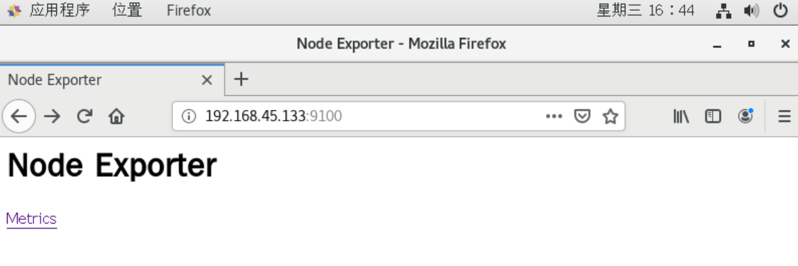
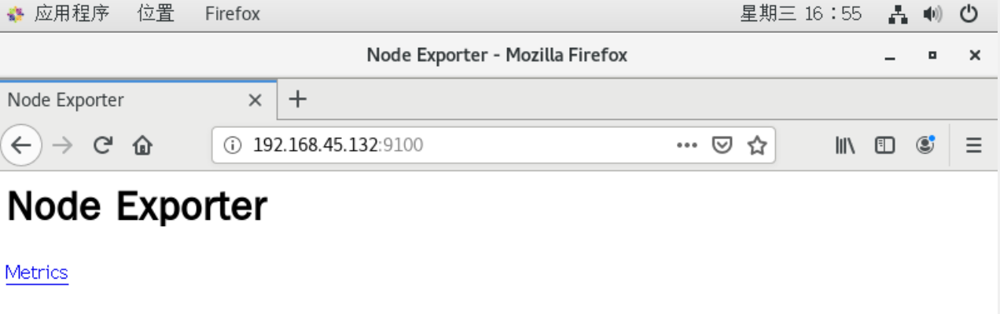
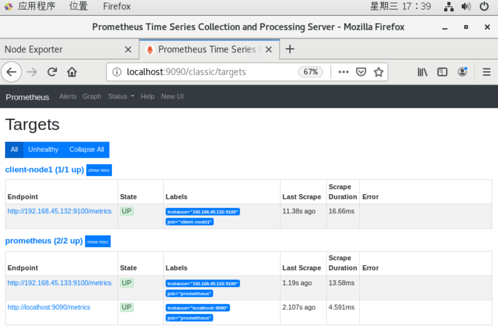

环境准备
| VM |
Environment |
IP |
Service |
| server |
docker |
192.168.45.133 |
Prometheus Server, Node Exporter, cAdvisor, Grafana |
| client |
docker |
192.168.45.132 |
Node Exporter、cAdvisor |
| nginx |
nginx |
192.168.45.134 |
/ |
部署 node_exporter
server、client.
server
1
2
| docker pull prom/node-exporter
docker run --name=node-exporter -p 9100:9100 -itd prom/node-exporter
|
访问：http://192.168.45.133:9100 查看节点信息。

client
1
2
| docker pull prom/node-exporter
docker run --name=node-exporter -p 9100:9100 -itd prom/node-exporter
|
访问：http://192.168.45.132:9100 查看节点信息。

安装 prometheus
server.
1
2
| mkdir -p /server/docker/prometheus/{server,client}
touch /server/docker/prometheus/server/rules.yml
|
编辑 prometheus.yml 文件，添加客户端信息：
1
| vim /server/docker/prometheus/server/prometheus.yml
|
1
2
3
4
5
6
7
8
9
10
11
12
| global:
scrape_interval:
external_labels:
monitor: 'codelab-monitor'
scrape_configs:
- job_name: 'prometheus'
scrape_interval: 5s
static_configs:
- targets: ['localhost:9090','192.168.45.133:9100']
- job_name: 'client-node1'
static_configs:
- targets: ['192.168.45.132:9100']
|
docker 启动 prometheus：
1
| docker pull prom/prometheus
|
1
2
3
4
5
6
| docker run --name prometheus -p 9090:9090 \
-v /server/docker/prometheus/server/prometheus.yml:/etc/prometheus/prometheus.yml \
-v /server/docker/prometheus/server/rules.yml:/etc/prometheus/rules.yml \
-itd prom/prometheus \
--config.file=/etc/prometheus/prometheus.yml \
--web.enable-lifecycle
|
注：启动时加入 --web.enable-lifecycle 启用远程热加载配置文件，--config.file 启动时加载配置文件。
访问 http://192.168.45.133:9090 显示 Prometheus 。

安装 Grafana
server.
先启动测试 grafana
1
| docker pull grafana/grafana
|
1
| docker run --name=grafana -p 3000:3000 -itd grafana/grafana
|
将配置文件复制到宿主机：
docker exec -it 96f51e2d555b /bin/bash
1
2
| docker cp grafana:/etc/grafana/grafana.ini /server/docker/prometheus/grafana/
docker rm -f grafana
|
修改配置文件 grafana.ini，配置 smtp 邮件报警信息。
1
| vim /server/docker/prometheus/grafana/grafana.ini
|
1
2
3
4
5
6
7
8
9
10
| enabled = true
host = smtp.qq.com:465
user = camellia24@qq.com
password = dygawislbduqbehe
;cert_file =
;key_file =
;skip_verify = false
from_address = camellia24@qq.com
;from_name = Grafana
|
根据实际添加上面这几条，host 、 password 可以登录邮箱查看。
正式启动 grafana
1
2
3
4
5
| docker run -p 3000:3000 --name grafana \
-v /server/docker/prometheus/grafana/grafana.ini:/etc/grafana/grafana.ini \
-v /server/docker/prometheus/grafana/data:/var/lib/grafana \
-e "GF_SECURITY_ADMIN_PASSWORD=grafana123" \
-itd grafana/grafana
|
注：-e "GF_SECURITY_ADMIN_PASSWORD=grafana123" 是设置 grafana 登陆页面的密码，如不添加这条，默认账号密码为 admin/admin。
访问 http://192.168.45.133:3000 ，账号密码为：admin/grafana123。
nginx 实现域名访问 grafana
1
2
3
4
5
6
7
8
| server {
server_name grafana.aa.com;
listen 80;
location / {
proxy_pass http://192.168.45.133:3000;
}
}
|
访问 http://grafana.aa.com 。
添加 prometheus 数据源
COMPLETE > Add your first data source > Settings .
添加模板文件（监控主机信息）
参考 grafana 常用监控模板大全 和 grafana 官网模板 。根据需求下载网址中的模板，下载到本地后，导入到 grafana：
MENU > Manage > Import > Upload JSON file > 输入 URL > Load .
也可以根据官网的模板 ID 号下载：
MENU > Manage > Import > Import via grafana.com > 输入 ID > Load .
Options > prometheus > Prometheus > Import.
安装 cAdvisor
server、client.
docker 安装 cAdvisor
1
| docker pull google/cadvisor
|
1
2
3
4
5
6
| docker run -p 8088:8080 --name cadvisor \
-v /:/rootfs:ro \
-v /var/run:/var/run:rw \
-v /sys:/sys:ro \
-v /var/lib/docker/:/var/lib/docker:ro \
-itd google/cadvisor:latest
|
将 ip、端口加入到 prometheus.yml 文件，重启 prometheus 服务。
1
2
3
4
5
6
7
8
9
10
11
12
| global:
scrape_interval:
external_labels:
monitor: 'codelab-monitor'
scrape_configs:
- job_name: 'prometheus'
scrape_interval: 5s
static_configs:
- targets: ['localhost:9090','192.168.45.133:9100','192.168.45.133:8088']
- job_name: 'client-node1'
static_configs:
- targets: ['192.168.45.132:9100','192.168.45.132:8088']
|
重启 prometheus 让配置生效
1
| docker restart prometheus
|
添加模板，监控 docker 容器
自行选择模板。
安装 blackbox_exporter 监控端口
server.
docker 安装 blackbox_exporter
1
| docker pull prom/blackbox-exporter
|
1
| docker run --name blackbox -p 9115:9115-itd prom/blackbox-exporter
|
在 prometheus.yml 文件添加监控配置：
注意：格式不对， prometheus 会报错。
1
2
3
4
5
6
7
8
9
10
11
12
13
14
15
16
17
18
19
20
21
22
23
24
25
26
27
28
29
30
31
32
33
34
35
36
37
38
39
40
41
42
43
44
45
| ...
- job_name: 'prometheus_port_status'
metrics_path: /probe
params:
module: [tcp_connect]
static_configs:
- targets: ['192.168.1.20:8088','192.168.1.20:9100','192.168.1.20:8091','192.168.45.132:8088','192.168.45.132:9100','192.168.45.132:8091']
labels:
instance: 'port_status'
group: 'tcp'
relabel_configs:
- source_labels: [__address__]
target_label: __param_target
- source_labels: [__param_target]
target_label: instance
- target_label: __address__
replacement: 192.168.1.20:9115
- job_name: 'node_status'
metrics_path: /probe
params:
module: [icmp]
static_configs:
- targets: ['192.168.1.20','192.168.45.132']
labels:
instance: 'node_status'
group: 'node'
relabel_configs:
- source_labels: [__address__]
target_label: __param_target
- target_label: __address__
replacement: 192.168.1.20:9115
- job_name: 'web_status'
metrics_path: /probe
params:
module: [http_2xx]
static_configs:
- targets: ['https://www.baidu.com']
labels:
instance: 'web_status'
group: 'web'
relabel_configs:
- source_labels: [__address__]
target_label: __param_target
- target_label: __address__
replacement: 192.168.1.20:9115
|
blackbox-exporter 在 grafana 页面展示需要安装 grafana-piechart-panel 插件。
下载完后，上传到 /server/docker/prometheus/grafana/data/plugins 。
1
2
3
| docker restart grafana
docker exec -it grafana grafana-cli plugins install grafana-piechart-panel
docker restart grafana
|
在 grafana 面板添加模板
略。
Alert 警报
AlertManager 告警
略。
Grafana 自带 alert 告警
略。
参考
https://www.cnblogs.com/cfzy/p/14750004.html